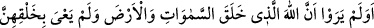
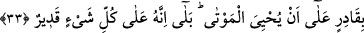
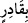

ben sizin için kuşatıcı bir günün azabından korkuyorum” buyurmaktadır. (Hud,
11/84), diğerleri de böyledir.
Ayrıca bu durum onların cennete girmelerini gerektirir. Çünkü günahları bağışlanıp
azaptan korunan kimse, peygamberlerin getirmiş oldukları şeriatlardan sorumlu olup
cennete girer.
Üçüncü ve dördüncü görüşlerin delilleri yukarıda geçmişti. Gerçek ilim, yüce sultan
olan Allah katındadır. Dönüş ve sonuç da O’nadır.
33. Gökleri ve yeri yaratan, bunları yaratmakla yorulmayan Allah’ın, ölüleri
diriltmeye de gücünün yeteceğini düşünmezler mı? Evet O, her şeye kadirdir.
“Gökleri ve yeri” hiçbir örneği olmaksızın ilk olarak “yaratan, bunları yaratmakla
yorulmayan,” zorlanmayan yahut bu işten âciz olmayan “Allah’ın, ölüleri diriltmeğe de
kadir olduğunu görmediler” düşünmediler, görme hükmünde kesin bir bilgiyle
bilmediler “mi? Evet O, her şeye kadirdir.” Bu suretle her şeye kadir olan Allah,
ölüleri diriltmeye de kadirdir. Çünkü ölüleri diriltmek de bu kadir olunan şeyler
cümlesindendir. Allah Teâlâ’nın kudreti kendi kudret alanında olan bir şeye tahsis
edilip yine kudret alanında olan diğer şeyden tecrîd edilemez.
Hikâye edilir ki: İmâm Kisâî’nin bunca yaşına rağmen nahiv ilmini öğrenmesine
sebep şudur: Bir gün uzunca bir yol yürüdükten sonra yorulur. Dinlenmek üzere bir
topluluğun yanına oturur. Hemzesiz ve şeddeli olarak “ayyiytü” der. Orada bulunanlar,
“sen bizimle oturma, çünkü sen kural bakımından hatâlı konuşuyorsun” derler. Kisâî,
“nasıl yâni” der. Oradakiler, “eğer yorulduğunu ifâde etmek istiyorsan, “ayeytü”
diyeceksin, şâyet çaresizliğini, işten âciz kaldığını ifâde edeceksen, bu sefer “ayiytü”
diyeceksin” dediler. Kisâî hemen oradan kalkıp nahiv bilen bir âlim sordu. Onu devrin
alimlerinden Muaz’a yönlendirdi. Kisâî bu zâtâ müdavim olup ondan alabileceği ilmi
aldı. Sonra Basra’da meşhur nahiv âlimi Halil b. Ahmed’in yanına gitmek üzere yola
çıktı.
Fakîr (Bursevî) der ki: Zâhir olan buradaki “iyy” kelimesinden murad edilen şey
Allah Teâlâ’nın Kâf suresi 38. âyette “andolsun biz gökleri ve yeri ikisi arasında
bulunanları altı günde yarattık, bize hiçbir yorgunluk dokunmadı” kavlindeki
“lügub”dur. Malum, Kur’ân âyetleri birbirini tefsir eder. Allah hakkında yorgunluk
kaldırılmış olup böyle bir şey muhal ve imkânsızdır. Çünkü böyle bir şeyin oluşu zâfiyet
ve fesad gerektirir.
“ ifâdesi “”nin haberidir. Habere “”nın geliş sebebi ise âyetin başındaki nefyin